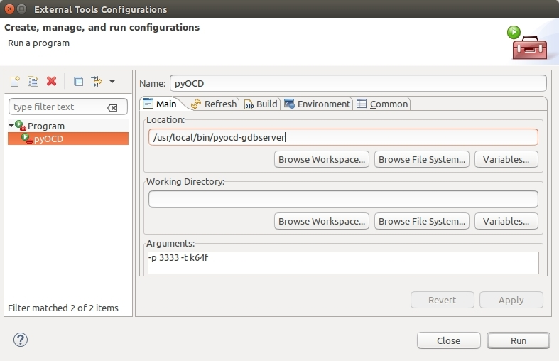

作者：tidyjiang8
frdm-k64f 是 zephyr 最早支持的两块开发板之一（另一块是 Arduino 101），因此 zephyr 对它的支持已经比较完善了。如果你想学习 Zephyr，又没有合适的开发板的话，这是我向你推荐的开发板之一。
使用 frdm-k64f 的主要好处：
- frdm-k64f 是 Zephyr 官方支持得最好的开发板之一
- frdm-k64f 的烧写、调试都非常方便
- 直接用 frdm-k64f 就能完成大部分基础实验
- 直接用 frdm-k64f 就能完成大部分网络实验(自带以太网卡，但是不能进行 ieee 802.15.4 相关实验)
- 直接用 frdm-k64f 就能完成大部分蓝牙实验
- 直接用 frdm-k64f 就能完成 JavaScript 实验
- 直接用 frdm-k64f 就能完成 MicroPython 实验
建议在阅读本文前，先阅读并理解 QEMU+Eclipse+Ubuntu 进行单步调试 这一篇文章。
预装软件
我们需要预装 pyOCD 这个软件。pyOCD 是为烧写和调试使用 CMSIS-DAP 的 ARM Cortex-M 系列微控制器而设计的是一块开源的基于 python 2.7 库的软件。它支持 Linux、OSX 和 Windows 三大平台。
pyOCD 的开源仓库是：https://github.com/mbedmicro/pyOCD
使用下面的命令安装最新的稳定版：
烧写程序
对于 frdm-k64f 来说，烧写程序非常简单。只需要一条 microUSB 数据线就既可以完成程序的烧写，还可以当做串口线使用，还可以用来进行调试。

用数据线将板子与 PC 连接在一起（板子上的接口为上图的左上角的 USB 口），PC 上面会识别出一个 USB 存储设备，直接将 .bin 文件拷贝到该设备的根目录，然后复位板子，就自动完成烧写了。
此外，PC 上面还会识别出一个 COM 口（Linux 平台是 /dev/ttyACM0），我们可以通过它来查看串口输出。
hello world
进入 hello_world 目录，进行编译：
除了上面所述的烧写方法外，zephyr 还单独提供了另一种烧写方法（利用 pyOCD），现将板子通过数据线接入 PC 中，然后执行命令：
然后就会自动完成烧写。
然后打开串口终端，就可以看到输出的 “Hello World” 了。
使用命令行调试
借助于 pyOCD，对 frdm-k64f 进行调试也非常非常方便。
在 hello_world 目录下，执行如下命令，就可以直接使用命令行进行调试了：
上面这条命令会自动将编译生成的二进制镜像烧写到 frdm_k64f 中，然后启动 debug server，然后启动 gdb client 来连接这个 gdb server，然后我们就可以开始输入 gdb 的命令进行调试：
虽然看上去非常简单的样子，但是这内部其实还隐藏了一些细节。这个过程主要涉及两个命令：
第 1 个命令的作用是通过 pyOCD 的工具启动 gdbserver，该 server 的端口是 3333。
第 2 个命令的作用是运行 gdb client，启动后执行了 gdb 三个命令：
- target remote:3333
- load
- monitor reset halt
因此，我们后面的主要工作，就是将这两个命令移植到 Eclipse 里面。
安装 Eclipse IDT
参考 QEMU+Eclipse+Ubuntu 进行单步调试。
创建工程。
参考 QEMU+Eclipse+Ubuntu 进行单步调试。
编译
参考 QEMU+Eclipse+Ubuntu 进行单步调试 创建一个 target，该 target 的配置如下：

调试
设置外部工具
我们前面说了，调试的过程主要包括两个命令。第 1 个命令 pyocd-gdbserver -p 3333 -t k64f 用于启动 gdbserver，我们可以按照 QEMU+Eclipse+Ubuntu 进行单步调试 所述方法在控制台运行这个命令，不过这里我们尝试在 Eclipse 里面运行这个命令。要完成该功能，需要借助于 Eclipse 的外部工具功能。
在 Eclipse 里面，依次选择 Run -> External Tools -> External Tools Configuations，在弹出的对话框中，新建一个 Programe 并按照如下方式进行填写：

- 在 Location 处填写 pyocd-gdbserver 的完整路径
- 在 Arguments 处填写传递给程序 pyocd-gdbserver 的参数
然后点击 Apply 进行保存，点击 Run 运行该命令。
运行完后，我们可以在 Console 窗口中看到如下消息。

我们可以看到，该窗口中的消息与我们在命令行运行 make BOARD=frdm_k64f debug 时打印的部分消息是一致的。
配置调试环境
依次在菜单栏中选择 run->debug configuration，然后在弹出的界面中，双击 C/C++ remote Application 新建一个调试项目，并将其命名为 hello-world，然后再选择下面的 Select Other，在新弹出的界面中选择 Manual 这一项，然后保存。
然后按下图所示进行填充。


上面的 Debugger 选项卡就是与我们之前的命令行一一对应的。
然后点击 apply 按钮保存(close 和 debug 两个按钮先不要动)。
开始调试
在 Eclipse 里面点击调试按钮进行调试。在弹出的对话框中选择 Proceed 和 Yes 按钮。然后，终于可以了：
额外的设置
#